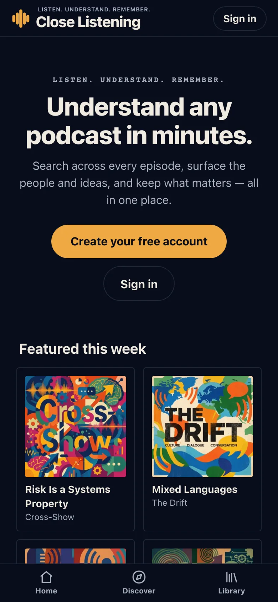
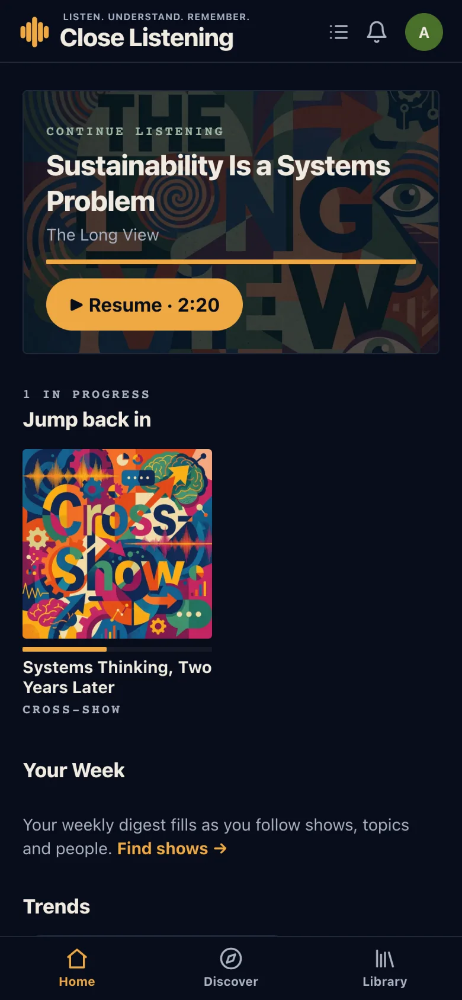
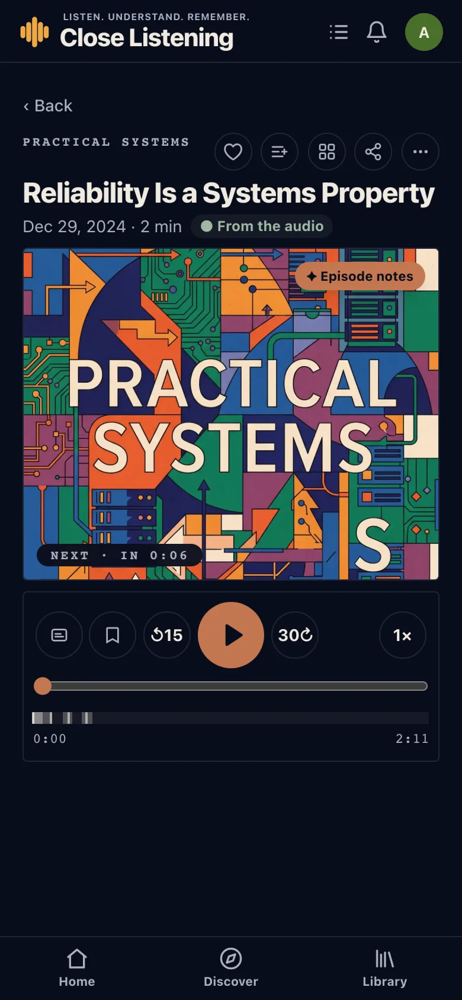
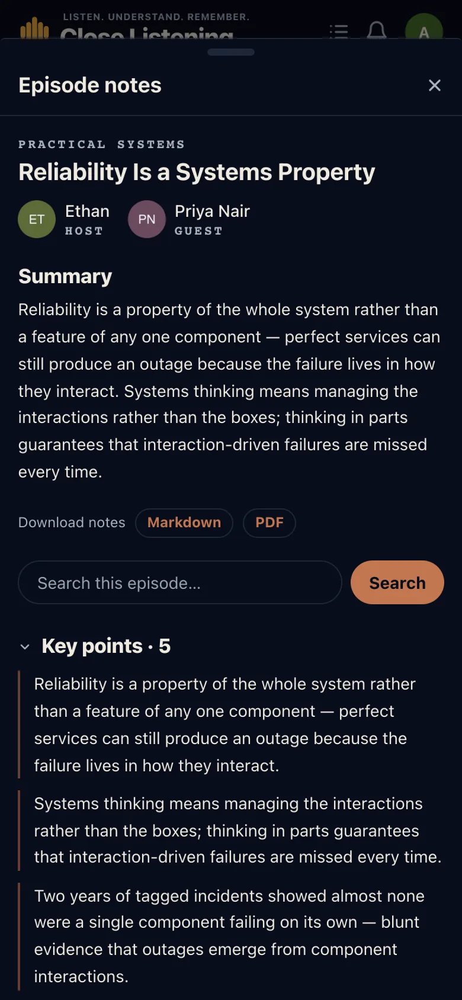
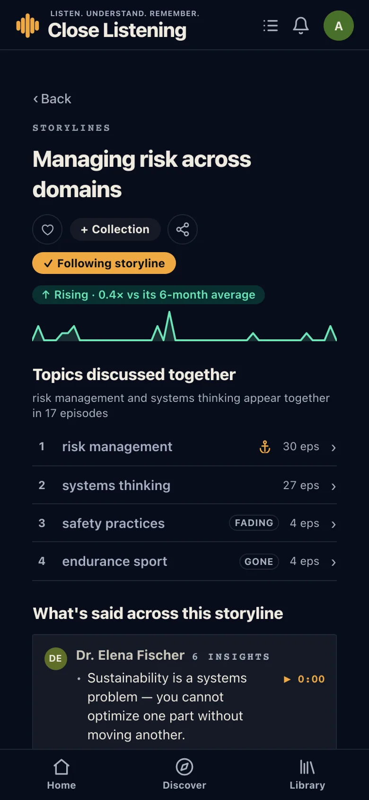

Library
- Following, Saved, Boards, Revisit.
- Save episodes, highlights, searches, shows and subjects, and tag them with a colour.
- Boards collect anything, in your own order.
- Revisit brings highlights back after two days, a week, a month and a quarter.
Release 1.0.0 · The first beta
The first beta of Close Listening: every episode comes with its transcript, the points its speakers make, and who they are. Search jumps to the moment something was said, and a library keeps what you want to come back to.
Getting in
A welcome page shows what is featured this week and how it works: search, listen, keep. Sign in with Google, or a link sent to your email, which opens the installed app. Access is limited to beta testers.


Episode player
While an episode plays, its insights appear over the artwork as they are said, with who said them. The seek bar marks where the insights are.


Topics · People · Themes · Storylines
Every topic, person, theme and storyline has its own page: who talks about it, how the conversation changed over time, the perspectives on it, and whether it is rising. Follow any of them.

Also in 1.0.0
Something not working as described? See the known issues.